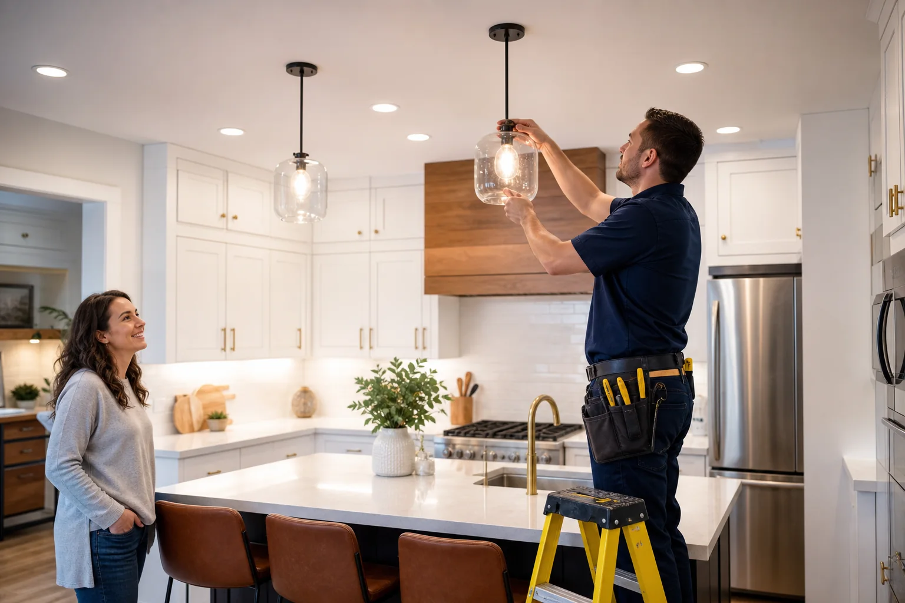

Keeping homes wired safely
Electrical service from first concern to final walkthrough.
Plan repairs, upgrades, inspections, and specialty electrical work with a request flow built for full-cycle provider matching.
Free electrical service request support. Independent providers perform the work.
Electrical projects often overlap: a panel upgrade may support an EV charger, rewiring may unlock better lighting, and a safety inspection may reveal the next repair. This website is structured to capture the full picture before a provider visit.
Tap a service group to open the matching list of detailed electrical service pages.
Describe the symptom, project goal, property type, and preferred contact method.
The request is shaped around the right electrical category and urgency level.
Independent local providers review the scope and discuss availability.
The provider confirms details, access needs, materials, permits, or inspection steps.
The customer verifies credentials, approves the work, and receives next-step guidance.

Use these quick answers to understand how repair, upgrade, inspection, and installation requests are organized before a provider follows up.
Describe the issue or project goal, property type, timeline, access notes, and whether the work is urgent. Photos of panels, fixtures, outlets, or damaged areas can help clarify the scope.
Yes. You can combine repairs, lighting changes, panel questions, inspections, EV charging, backup power, or smart-home electrical work so the provider can review the full picture.
Emergency issues should be called in directly when safety is at risk. The form still helps organize follow-up details, but urgent power loss, burning smells, sparks, or exposed wiring should be handled immediately.
The request flow separates property type, load requirements, access needs, operating hours, and compliance details so commercial, industrial, and residential work can be scoped appropriately.